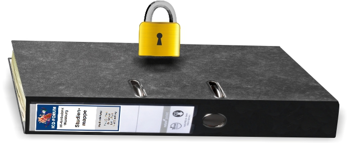

Hinweise zum Datenschutz

Alle erhobenen Daten dienen ausschließlich Forschungszwecken und werden unter Einhaltung der geltenden Datenschutzbestimmungen streng vertraulich behandelt. Ihre Daten werden pseudonymisiert gespeichert und ausgewertet. Das bedeutet, dass Ihre Daten nicht in Verbindung mit Ihrem Namen ausgewertet und gespeichert werden, sondern nur durch einen Code als zusammengehörig erkannt werden können. In dieser pseudonymisierten Form gehen die Daten in den Datensatz der Forschungskooperation mit dem DZHI Würzburg ein. Zugriff auf diese Daten haben nur Mitarbeiter des Forschungsprojektes. Veröffentlicht werden ausschließlich statistische Gesamtauswertungen, die weder Rückschlüsse auf die Identität der Teilnehmer, noch auf deren individuelle Daten ermöglichen.
Speziell für die Kontaktaufnahme zu Beginn und für eine evtl. Unterstützung während der Fernbetreuung müssen die zuständigen Psychologen (Dr. Stefan M. Schulz und Mag. Richard Zniva, Lst. für Psychologie I, Marcusstr. 9-11, 97070 Würzburg) Ihre Kontaktdaten kennen. Genau wie Ärzte unterliegen diese Personen der gesetzlichen Schweigepflicht.
Aufgrund gesetzlicher Regelungen haben bestimmte Personen (autorisierte Dritte) ein Recht auf Einsichtnahme in Ihre personenbezogenen Daten/Krankenakten. Dazu zählen Beauftragte des Auftraggebers, Mitarbeiter der zuständigen Überwachungsbehörde oder der zuständigen Bundesoberbehörde. Die Einsichtnahme/Weitergabe erfolgt nur im Rahmen der gesetzlich geregelten Aufgaben der Einsichtnehmenden, nämlich zum Zweck der Überprüfung der Daten. Diese Personen sind zur Verschwiegenheit verpflichtet.
Sie können zu jedem Zeitpunkt und ohne Angabe von Gründen, ohne dass Ihnen daraus Nachteile entstehen, Ihre Einwilligung zur Datenanalyse widerrufen sowie die Löschung Ihrer Daten verlangen. Wenden Sie sich dazu bitte an Herrn Dr. Stefan M. Schulz, icd-forum@psychologie.uni-wuerzburg.de, Tel.: +49(0)931/31-80563, Marcusstr. 9-11, 97070 Würzburg.
Gegenüber anderen Teilnehmern im ICD-Forum können Sie völlig anonym bleiben. Sie erhalten von uns personalisierte Zugangsdaten, mit denen nur Sie Zugriff auf die Plattform haben. Beiträge von Ihnen erscheinen nur unter einem von Ihnen selbst vergebenen Namen (dies kann auch ein Pseudonym sein). Alle von Ihnen eingegebenen Daten werden verschlüsselt übertragen. Dabei wird eine Sicherheitsstufe verwendet, wie sie z.B. auch für Online-Banking üblich ist. Wenn Sie Ihre Identität innerhalb des ICD-Forums preisgeben möchten, ist dies Ihre freie Entscheidung.
Alle hier genannten Punkte - insbesondere Anonymität und Datenschutz - sind für die nachfolgend genannten beteiligten Einrichtungen daher in gleicher Weise gültig:
- Deutsches Zentrum für Herzinsuffizienz (DZHI)/Comprehensive Heart Failure Center (CHFC), Würzburg
- Institut für Psychologie, Lehrstuhl für Psychologie I, Universität Würzburg
- Medizinische Klinik und Poliklinik I, Würzburg, Kardiologie
- Herz- und Gefäß-Klinik Bad Neustadt / Saale, Kardiologie
- Krankenhaus Rothenburg o.d.T., Abt. Innere Medizin
- Klinik Bad Wörishofen
- Medizinische Klinik I, Abteilung Rhythmologie, Klinikum Aschaffenburg
- Lehrstuhl für Informatik VI, Universität Würzburg
- Zentrum für klinische Studien (ZKS), Universität Leipzig